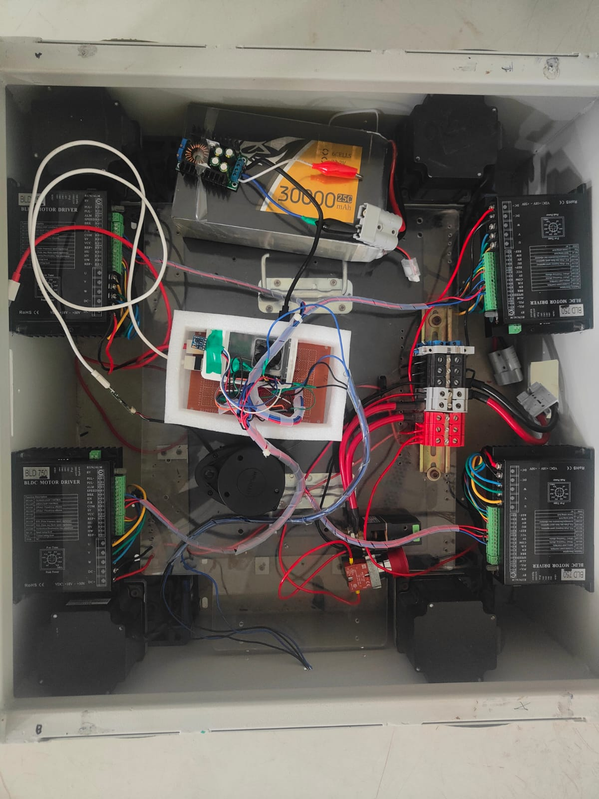

Electrical Circuit
Sprint 01 focused on designing and assembling the core electrical subsystem. The electrical circuit is engineered to deliver stable and clean power distribution across high-power actuators and sensitive compute architectures. Power from the central onboard battery is safely routed through precise buck and boost converters to drive the DC gear motors via the BTS7960 motor driver, while supplying isolated, regulated power lines to the main processing units and spatial mapping sensors. Ground looping and signal noise are minimized through optoisolator components and strict common grounding rules.

Autonomy Dashboard
Sprint 02 was dedicated to the creation of the web-based autonomous navigation dashboard. The interface acts as the central control console, presenting real-time ROS2 telemetry feeds, physical motor speeds, and battery diagnostics. The dashboard incorporates Leaflet map tracking for GPS localization alongside canvas components rendering computer vision feeds (with YOLOv8 real-time target bounding boxes) and obstacle radar streams generated by the RPLiDAR mapping sweeps.

Overall Integration
Sprint 03 completed the physical chassis fabrication, device mounting, and full system integration. The mechanical components and structural sheets were integrated with the electrical power distribution loops and computer processing modules. Critical autonomous sensors—specifically the depth camera and RPLiDAR—were securely mounted to their geometric fixtures and calibrated to map coordinate frames between physical spatial orientations and the ROS2 navigation stack, realizing a fully operational UGV model.